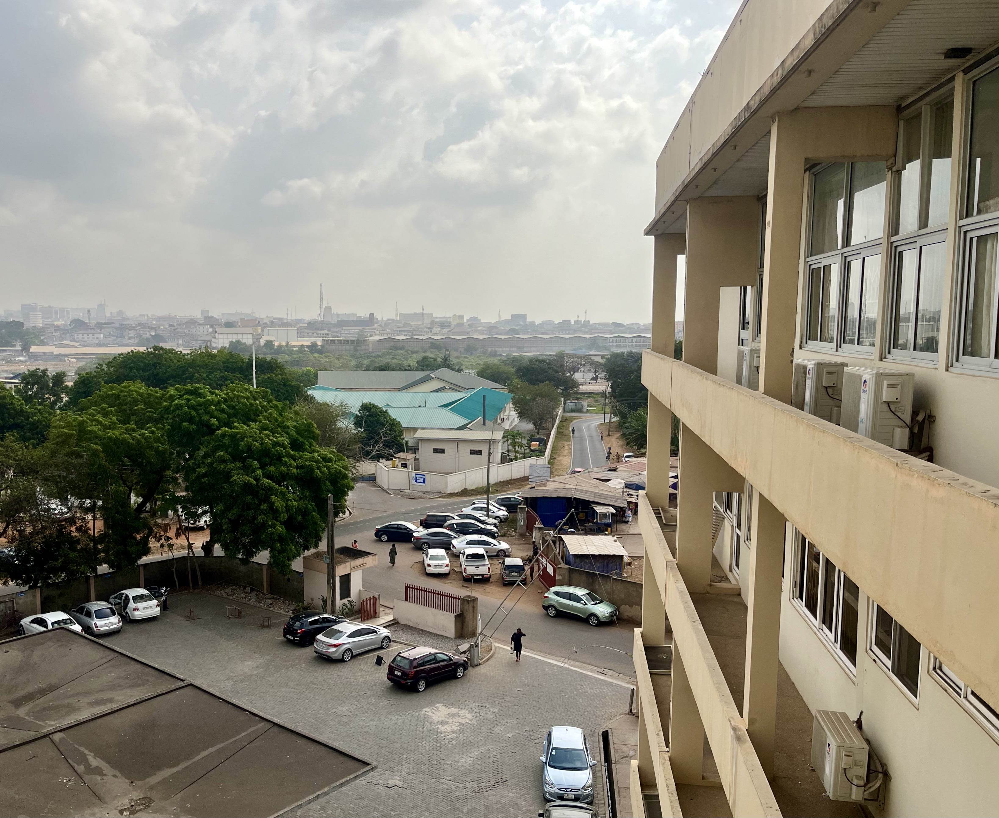

notes from accra
PAY TO PLAY
Friday February 16, 2024
“All clear? Everyone clear?” After a quick glance around the room, the cardiologist places the paddles on our patient’s chest and administers 90 J of electrical energy to her heart. “Ahh!” The previously silent, motionless patient yelps. We all glance over to the monitor screen, waiting for the irregular heart rhythm to change. Nothing happens. “Let’s go up to 120 J and try again.” A senior resident dials up the knob to fulfill the order. Paddles go back on the chest. “All clear? Everyone clear?” Another shock. Another yelp. But this time she momentarily wakes up, blearily mumbling “How many shocks was that? I only paid for one…“ Before anyone can respond, the anesthesia kicks back in, resuming her slumber. The monitor still shows atrial fibrillation. Dismayed, we remove the paddles and pack up to prepare for the next patient.
To be fair, I don’t think that patients pay for each individual shock administered rather than simply the entire cardioversion procedure. Still, I share this anecdote from this week to illustrate a broader theme I have observed: that patients here are very conscious about their itemized healthcare costs. Many Americans also experience financial barriers to healthcare access, and I don’t mean to suggest that this problem is unique to Ghana — just that it manifests in a different way.
Importantly, the payment models for financing American healthcare differ from the Ghanaian system. The overwhelming majority of patients in the U.S. pay for healthcare through insurance programs (either private or public), which means that patients often do not directly see the individual costs for medical services they receive. Here in Ghana, patients instead typically pay for services on their own rather than through an insurance scheme. The national government does offer a public insurance program (analogous to the UK’s NHS), although it covers relatively fewer benefits and remains underutilized (<40%) and underfunded. Very few patients use private insurance. Therefore, patients in Ghana are often both the users and payers of healthcare.
In the U.S., it feels like healthcare costs are the big elephant in the room during doctor-patient interactions. Doctors bill insurers, who in turn charge patients monthly premiums and co-pays. Even though everyone knows medicine is expensive, doctors (as the servicers) and patients (as the users) don’t directly negotiate the cost of care.
In contrast, I have noticed here at Korle Bu that doctors and patients more readily talk about affordability and the cost-effectiveness of health services. During ward rounds earlier this week, a resident informed the consultant that our patient was unwilling to pay for additional diagnostic testing. He had presented with shortness of breath due to a large volume of fluid surrounding his lungs, and the team wanted to analyze the cells (i.e., cytology) in this pleural fluid to better understand the cause. The consultant acknowledged that cytology provide useful information but pointed out that we could still pick up important clues through biochemical testing, a much cheaper option. In this low-resource environment where patients negotiate their own medical care, doctors are forced to think creatively about cost-effectiveness, unlike the high-resource setting approach of just ordering “comprehensive” panels of often-unnecessary tests.
But thinking cost-effectively only works up to a certain point. Sometimes the only effective treatment options are still too expensive. I started seeing this phenomena more throughout the week as I got better acquainted with the cardiology fellows and faculty. Medications can control advanced heart disease to an extent, but effective management often necessitates the use of invasive diagnostic and interventional procedures. In some patients with active chest pain, cardiologists might perform a coronary angiogram — a standard cardiac procedure that uses a catheter and x-rays to image the heart’s blood vessels and potentially open up any blockages. One of the cardiology fellows informed me that patients pay 18,000 GHS (~$1,500 USD) here for a coronary angiogram. Placing a stent costs an additional 6,000 GHS ($500 USD). Meanwhile, the national minimum wage is currently 18 GHS (~$1.50 USD) per day. As a result, many patients with unstable coronary artery disease are turned away simply because they cannot afford to pay. This same scenario holds true for many other patients.
One morning, I came in early to see a patient whom I had met the previous day with my classmates. Though the team was focused on the gastrointestinal exam at the time, I noticed this twenty-year old patient’s left chest was quivering, and I heard someone off-handedly mention that he had a heart murmur. This piqued my curiosity, so I decided to look into the cardiac aspect of his case. After arriving at his bedside that morning, I asked how he was doing and sought permission to do a cardiac exam. He replied that he was not feeling well. He shared with me that his doctors diagnosed him with endocarditis. They said he would need surgery to replace his heart valve, but the price was unaffordable. I listened to his heart, confirming what I suspected: a harsh, blowing murmur in the apex region that suggested severe mitral regurgitation. This patient had likely previously suffered from rheumatic fever, which damaged his mitral valve and led to his current condition. I lingered for a while longer, hearing out his grievances until I had to finally return upstairs for the morning session. I felt uncomfortable as I left, knowing that I had just met a patient younger than me who might die not because the medical care did not exist, but because he could not pay.
As I reflect on the patients I met this week, I think about how disturbingly common it is for money to be a barrier for accessing healthcare, either here in Accra or back home in the United States. In this current era of medicine, it feels like the biggest problems facing us are not rooted in scientific complexity but rather in the operations of health systems. For this reason, I have dedicated my research throughout medical school to minimizing the financial toxicity associated with new medical products. I am optimistic that such systems-level work will eventually bring some relief to the scores of patients in the same situation. Even still, it's hard to walk away from someone in front of you without being able to help.
Scenes from Korle Bu
Cardiac Catheterization
This week, I finally found my way in to the cardiology service, and everyone has been incredibly welcoming. After I expressed interest in seeing a cardiac catheterization, the division chief took it one step further and allowed me to scrub in to assist with the procedure.

View from the Wards
This is the view that greets me as I walk in to the internal medicine wards.

Life in Accra
Hike to Adom Falls
We went away this past weekend to Aburi, a town nestled in the mountains not too far away from Accra.
Botanical Gardens
On Sunday morning in Aburi, we went on a run through the botanical gardens.